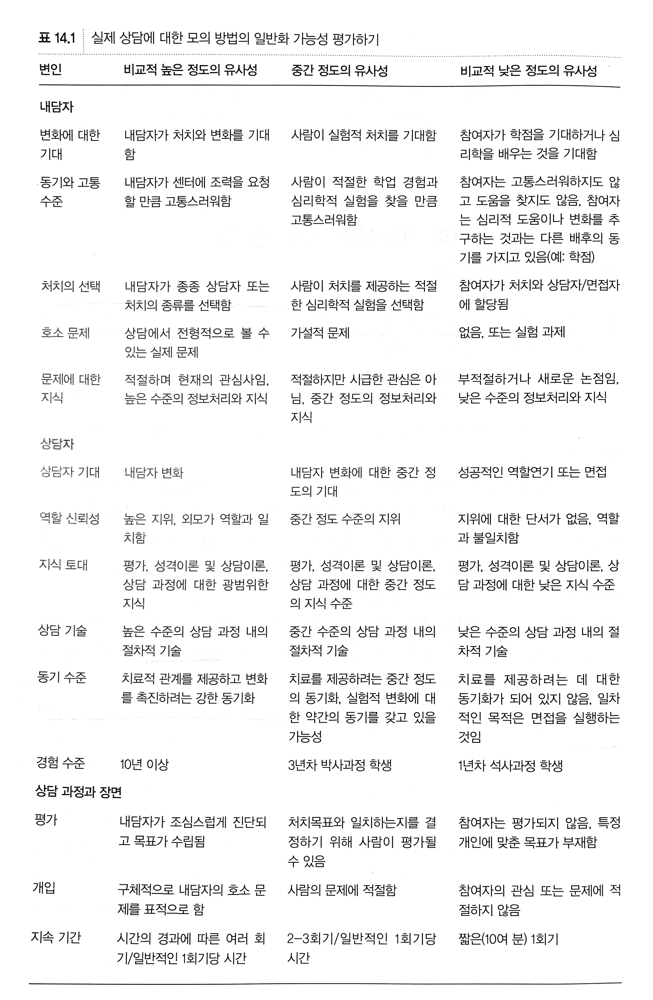
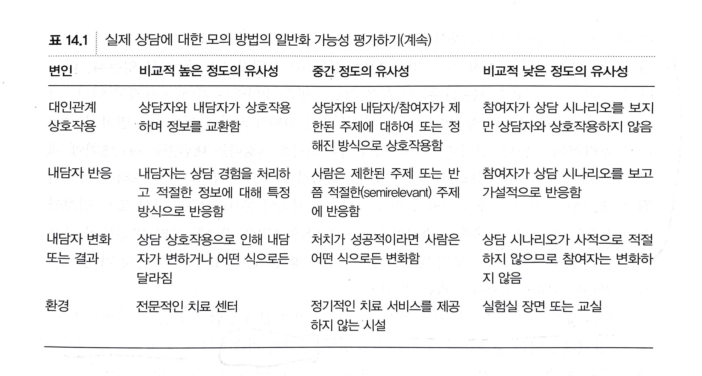
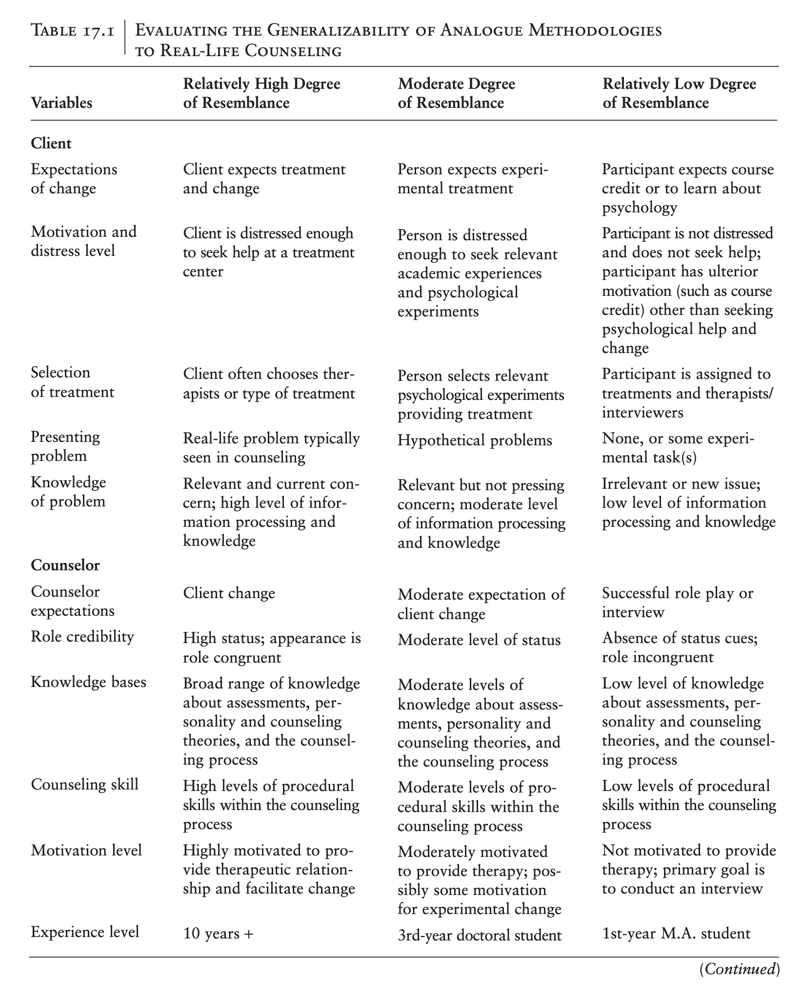
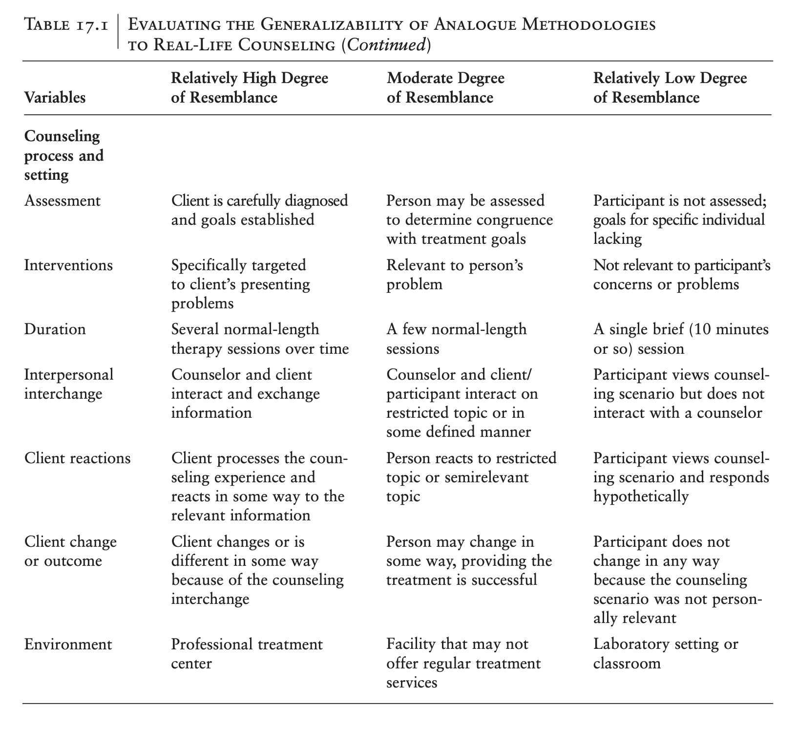

모의 연구 (14장)
상담연구방법론, by Heppner, P. P., Wampold, B. E., Owen, J., Thopso, M. N.
모의 연구(analogue research)는 상담 상황과 닮거나 비슷한 조건하에서 실험적 통제를 높혀 상담의 효과에 대한 구체적인 조건이나 기제를 밝히는 연구.
- 실험적 시연(simulation), 모형 상담(miniature therapy), 단순화 방락(simplication strategy)라고 부르기도 함.
- 상담의 복잡성을 고려해 볼 때, 이러한 실험적 통제를 통해 얻은 결론에 대한 타당성이 논란이 되어왔음.
- 역사적으로는 오래되었으나 최근에 와서야 활용되고 있음.
- 임상분야의 지식이 자연발생적인 전통(예. 프로이드의 사례 연구)을 통해 축척됨.
- 너무 인위적이고, 비현실적이라 상담자들이 거부하는 경향.
- 연구 결과의 외적타당도/일반화에 대한 큰 우려가 제기되어 왔음.
- “수용한 만한 단순화”가 제안되었으나(Bordin, 1965) 여전히 유용성에 논란이 지속됨.
모의 연구의 예
Lee 등(2013) 연구
- 61명의 상담수련생을 대상으로 3개의 가상의 비디오 상담 사례를 시청한 후 다문화 사례개념화에 대한 질문에 답함.
- 3개의 사례
- Cultural-explicit case: 문화적 요인을 명시적으로 언급
- 학대받는 인도 출신 여성이 이혼을 바라지만, 문화적 가치와 상충된다고 진술
- Cultural-implicit case: 문화적 요인을 암시적으로 언급
- 흑인 내담자가 다른 학생이 경멸적인 말을 했다고 진술; 그들을 인종주의자라고 언급하지는 않음.
- Culture-not mentioned case: 문화적 요인을 언급하지 않음
- 아시아계 내담자가 승진에서 탈락하여 가족에게 수치스러운 일이라고 진술
- Cultural-explicit case: 문화적 요인을 명시적으로 언급
- 우선, 참여자들의 반응을 분석하여 테마 리스트를 작성
- 이후 각 반응에서 테마에 얼마나 해당하는지를 체크
- 참여자들은 각 사례에서 고르게 테마를 인지하였고,
- general counseling skills (attend to affect, build rapport, focus on specific client concerns, use of specific clinical interventions, and use of external resources not related to culture),
- multicultural specific counseling skills (focus on culture, focus on discrimination, use of culturally competent interventions, and use of external resources related to culture).
- 9개의 테마 중 3개의 테마(감정, 문화, 차별)에서 사례별로 차이를 보였음.
- 문화나 차별에 대해 암묵적으로라도 언급한 경우에만 각각에 주의를 기울였음.
- 문화나 차별에 대해 언급하지 않았을 때에만, 감정(수치심)에 주의를 기울였음.
Mohr 등(2001) 연구
- 97명의 석박사 과정 상담 수련생을 대상으로, 가상의 접수면접 보고서를 읽게 한 후 시나리오에 나온 내담자에 대한 반응을 측정.
- 시나리오의 내담자는 양성애자이고, 수련생의 양성애자에 대한 태도가 내담자에 대한 태도에 영향을 미칠 것이라는 가설
시나리오에서 20세 백인 양성애자인 여성 내담자는 다음 어려움을 호소함.
(1) 진로 선택의 어려움
(2) 다른 여성과의 관계가 끝난데 대한 슬픔
(3) 양성애자임을 수용하기 힘들어하는 남자 친구
- 양성애자에 대한 부정적 태도를 가진 상담 수련생들은 (1) 이 내담자의 심리사회적 기능을 낮게 평가했으며, (2) 이 내담자를 실제 상담한다고 했을 때의 예상되는 반응은, 편향적이고 비판적으로 나타났음.
- 양성애에 대한 태도는 레즈비언과 게이 남성에 대한 태도를 통제한 후에도 유의했음.
- Controlling for Graduate Training Program, Sex, Sexual Orientation, and Attitudes Toward Lesbians and Gay Men
- Formal training experience measure and other demographic variables을 측정 후 통제함.
- Self-presentation bias를 통제하기 위해 The Concern for Appropriateness Scale로 측정함.
Wang & Kim (2010) 연구
상담자가 다문화 기술 역량을 보인 상담과 보이지 않은 상담의 2 가지 비디오에 대해 반응을 측정.
- 113명의 아시아계 미국 대학생을 대상으로 참여자가 상담의 내담자인 듯이 가정하고, 비디오의 상담자를 평가하도록 함.
- 상담자의 다문화 기술 역량을 보이는 상담에서 작업동맹과 공감을 더 높게 평가함.
모의 연구의 장점과 약점
- 여러 관련없는 변수들을 통제하고, 무선할당 등 내적타당도를 높인 연구가 가능
- 현실적인 윤리적인 제약을 피할 수 있음
- 대리 내담자를 이용해 재정적 한계와 참여자를 용이하게 구할 수 있음.
- 심리적 문제를 지닌 내담자를 위약집단이나 대기자 집단에 할당하는 등의 윤리적 문제를 피할 수 있음.
- 상담자의 상담 방식을 조작하여, 예를 들어 상담자의 공감능력을 낮춘다든가, 자기개방 유형을 달리하는 등의 조작은 윤리적으로 바람직하지 못함.
- 한편, 지나친 단순화를 통한 현실과 거리가 있는 상황을 연출하여 실제 상담에 일반화할 수 있는지가 큰 의문
- 조작된 변수들이 그저 추상적 개념에 불과한 실제 변수인지 불분명함.
- 연구 분야 전체적으로 내적타당도와 외적타당도의 균형이 이루어지도록 다양한 연구방법론이 활용되어야 함.
모의 연구의 일반화 가능성을 평가하는데 고려해야한 변수들
모의 연구의 최대 관심사는 “실험실 실험이 얼마나 실제 상담 상황과 유사한가”에 대한 것임.
아래 표는 내담자, 상담자, 상담과정과 장면으로 나누어 실제 상담과의 유사성을 평가하는 리스트로 제시됨.
표 14.1
 
 
역사적으로 상담자 변수의 효과를 검증하기 위해 전형적인 상담자 역할 혹은 행동과 다른 상담자 역할이 수행되었음.
- 지각된 상담자의 전문성, 매력, 신뢰성과 관련된 여러 범위의 단서들을 조작했음.
- 예를 들어, 다음과 같이 지각된 전문성을 낮추기 위해 시나리오를 구성: “원래 ___ 박사님이 당신과 이야기를 나누려고 했습니다만 불행히도 오늘 올 수 업사고 합니다. 대신 면접 경험이 없는 ___ 선생님에게 면접을 부탁했습니다. ___ 선생님은 학생입니다. 이분에게는 연구의 목적에 대해서 짧게만 간단히 설명을 했습니다만, 잘 해내리라 생각합니다”
- 또는, 면접자의 상담 기술을 조작하기 위해, “피면접자가 사물실에 들어올 때 그를 무시했고, 웃지도 않았으며, 잠깐 차갑게 쳐다보는 것 이상을 하지 않았다. 또한 그에게서 멀리 몸을 기대였고, 무관심, 차가움, 지루함을 보였다”
- 이런 비전형적인 행동에 대한 연구가 유용한지, 일반화 될 수 있는지에 대한 의문을 제기하기도 하지만,
- 반대로, 상담자 행동이 어떻게 효과적인 상담을 만드는데 기여하는지 파악할 수 있음.
실제와 더욱 유사하게 모의 연구하기
앞서 상담 과정과 관련된 모의 연구에 대해 논의하였으나,
많은 연구들이 “개인의 도움 요청”을 방해하는 요인들을 검토하고 있음.
Hammer & Vogel (2010) 연구
- The National Institute of Mental Health (NIMH)에서 “Real Men. Real Depression.”(RMRD) 을 전국적 캠페인을 실시했는데, 그 일부분임.
- 4,967명의 남자를 모집했고, 우울증에 대한 기준을 충족하고, 우울증에 대한 도움을 구하지 않은 1,397명을 대상으로 함.
- 3개의 조건으로 캠페인의 브로셔를 제작함.
- RMRD 브로셔: 기존의 브로셔: 남성과 우울증에 특화된 사실, 우울증을 경험한 다양한 인종 그룹의 남성들의 증언과 사진, 그리고 우울증 증상에 대한 섹션이 포함되어 있습니다.
- 중성적인(gender-neutral) 브로셔: Rochlen 등(2006)이 만든 브로셔. RMRD 브로셔와 유사하지만 자료 전체에서 남성 중심을 제외하였습니다. 예를 들어, 태그라인을 “Real Men. Real Depression.”에서 “Real People. Real Depression.”으로 수정하였습니다. 게다가, 미국 인구의 우울증 유행률에 관한 통계도 남성과 여성 모두를 포함하여 변경되었습니다.
- 새롭게 개발된 남성에 민감한(male-sensitive) 브로셔: 심리학적 지식과 정신 건강 마케팅에서 현재 지식을 접목하여 RMRD 브로셔를 개선하기 위해 만들어졌습니다. 구체적으로 말하자면 남성 친화적인 브로셔는 “남성적 우울증”을 특징 짓는 증상을 설명하고 전통적인 남성 성역과 호환되는 언어를 사용했습니다 (예: “정신 건강 컨설턴트”; “공격 전략”; 상담을 해결 중심의 비용 효율적이고 고객 중심의 팀 작업으로 묘사함), 의지력 부족에 대한 오해를 약한 의지력과 관련된 것으로 인식하는 의학 모델 설명을 인용하여 바로잡았으며 예방적 상담의 경제성과 후기 의료 치료와의 비교에 대해 논의하였으며 증언 사진에서 보다 남성스러운 외모를 가진 남성들을 보여주었습니다. (by DeepL)
- 남성에 민감한 브로셔를 읽은 사람들은 “도움 추구”에 관한 보다 긍정적인 태도, 더 낮은 수준의 “자기낙인”을 보임
- 장점들
- 실제 캠페인의 일부로서 현장에서 진행되었음.
- 우울하면서 도움을 구하는 않은 사람들로 포함 준거를 둠으로써, 실제 목표 청중과 유사하게 만들었음.
- 단점들
- 다른 남성들에게도 일반화 가능한지 불분명함.
- 실제로 도움을 구하는 사람이 어느 정도인지 알 수 없음.
존재하는 지식 기반에서 모의 연구의 유용성 평가
분명, 모의 연구방법이 강력하고 유용하다는데는 의심의 여지가 없으나,
- 다른 연구방법들과 마찬가지로, 모의 연구는 기존 연구들과 축적된 지식 기반에 따라 그 유용성이 결정됨.
- 현장에서 수행된 연구 문헌에 추가적으로 모의 연구가 어떻게 우리의 지식 토대를 확장, 증가시킬 것이지 고민해야 함.
- 실제 세상에서 연구하는 것이 얼마나 비윤리적인가에 따라 모의 연구의 유용성은 달라질 수 있음.
- 가용한 자원이 제한적인 상황에서 모의 연구의 유용성이 높아질 수 있음.
일반화 가능성의 문제는 간과될 수 없으며, 실제 상담에 적용할 때는 주의해야 함.
- 예를 들어, 과거에 “내담자의 정서 변화”에 영향을 주는 “상담자의 능력”과 관련된 요인을 거의 전적으로 모의연구로 검토했음.
- 하지만, 이런 연구 결과가 실제 상담 환경에서 거의 지지되지 못했음.
- 모의 연구가 수행하기 쉽다는 점에서 유혹적일 수 있으나,
- 모의 연구의 결과로부터 실제 세상에서 유사한 가설을 검증하는 과정을 거칠 필요가 있음.